|
FDD読み取り器 |
|
データビット読み取り |
データビットは WINDOW が 1 の範囲にあります、これを読み取ってシフトレジスタの rddata に蓄積します。
| 図1: データビット読み取り |
|
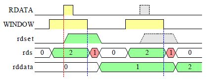 |
WINDOW が 1 の範囲中に RDATA が 1 になれば、そのビットは 1 であり RDATA が 1 にならなければ、そのビットは 0 です、その値は rdset に記憶されて WINDOW が 1 から 0 になるときに rddata のシフトレジスタに記憶します。 rdset の記憶と rddata のシフトレジスタの駆動は rds.0 が 1 のときに行います。
|
クロックビット読み取り |
クロックビットは WINDOW が 0 の範囲にあります、これを読み取ってシフトレジスタの rcdata に蓄積します。
| 図2: クロックビット読み取り |
|
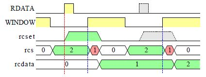 |
WINDOW が 0 の範囲中に RDATA が 1 になれば、そのビットは 1 であり RDATA が 1 にならなければ、そのビットは 0 です、その値は rcset に記憶されて WINDOW が 0 から 1 になるときに rcdata のシフトレジスタに記憶します。 rcset の記憶と rcdata のシフトレジスタの駆動は rcs.0 が 1 のときに行います。
|
トラックの構造 |
トラックの構造は 図3 のようになっています。 トラックの先頭は機械的な方法で取得された信号とディスクに書き込まれたデータで検出できます。 INDEX データから読み出すためには機械的な INDEX によってデータ分離器の初期化を行います。
| 図3: トラックの構造 |
|
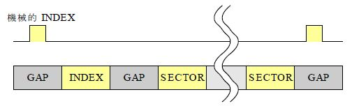 |
INDEX と SECTOR には有効データがあります、この最後のデータを読んだあとでは次の SECTOR を読むためにデータ分離器を初期化します。
|
INDEX |
INDEX は有効データなので先頭に SYNC を持っています。
| 図4: FM方式のINDEX |
| 図5: MFM方式のINDEX |
|
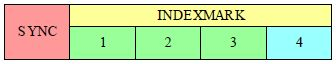 |
SYNC の次には識別データがありますが通常のデータと区別するために識別データのクロックパルスの一部を付けません、 これを ミッシングクロック と言います。 両方式の INDEX のデータバイトとクロックバイトを示します。
FM 方式ではクロックバイトは FF ですから D7 は 2 個の ミッシングクロック を付けています。 MFM 方式では4バイトの構成になっていますがこれは MFM 方式ではクロックパルスが減少するので ミッシングクロック を増やすための処置です。
|
SECTOR |
SECTOR はユーザのデータが記憶されるところです。 目的の SECTOR の特定のためにIDフィールドがありますデータの記憶のためにデータフィールドがあります。
| 図6: SECTORの構造 |
|
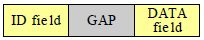 |
|
IDフィールド |
CRC は次の計算を行います P(X)=X16+X12+X5+1
| 図7: FM方式のIDフィールド |
|
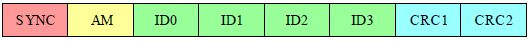 |
| 図8: MFM方式のIDフィールド |
|
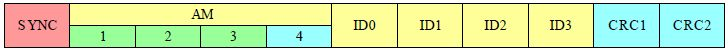 |
|
データフィールド |
CRC は ID フィールドと同じ計算を行います。 DATA の個数は ID フィールドの レコード長 で示されます。
| 図9: FM方式のデータフィールド |
|
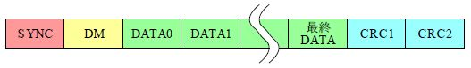 |
| 図10: MFM方式のデータフィールド |
|
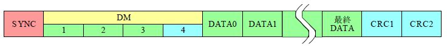 |
データフィールドのデータが有効なときは FB を使います 削除等で無効になっているときは F8 を使います。
|
トラック読み出し行程 |
機械的インデックスの示す位置がトラックの基本的な開始位置になります、 なぜなら何も書かれていないディスクのフォーマットでは機械的インデックスを基準にトラックを書き込んで いますからディスクの読み出しでは機械的インデックスの後にインデックスマークが書き込まれていること を前提にトラックの始まりを検出します。
| 図11: FM方式のトラック行程 |
|
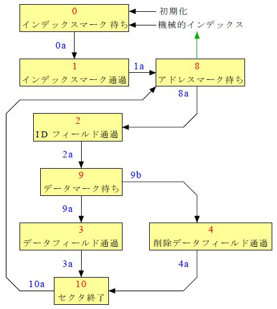 |
| 図12: MFM方式のトラック行程 |
|
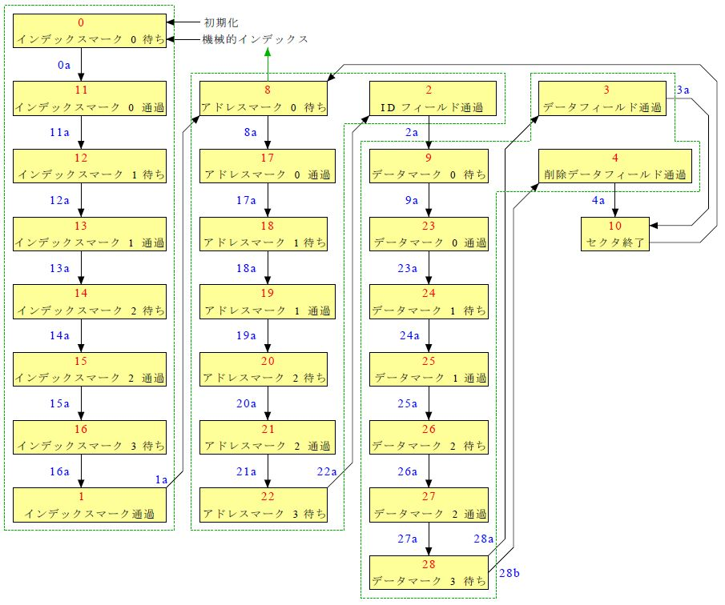 |
|
読み出しデータ |
FDD から読み出すデータは2種類ありますデータパルスとクロックパルスを別々にシフトレジスタに記憶したものです。 データパルスを記憶したものが普通の意味のデータですクロックパルスを記憶したクロックデータは インデックスマークやアドレスマークやデータマークなどの普通のデータとは明瞭に区別する必要があるのでデータ とクロックデータとでの照合に使います。
| 図13: 読み出しデータ |
|
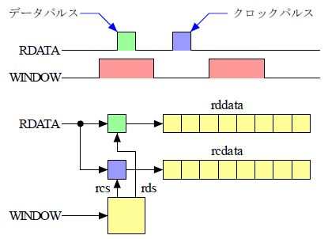 |
|
マークデータ |
マークデータにはインデックスマーク、アドレスマーク、データマーク、削除データマークがあります。
図11 と 図12 のトラック行程の trkseq はマークデータの検出によって移行しています。
アドレスマークに連続してIDフィールドのデータが続いています データマークに連続して通常データが続いています。 この2種類のマークデータの直後をバイト境界としてバイトデータを読み出していきます。 このためにトラック行程の trkseq の変化点でビット同期指標の bitsyncro を 1 にします。
バイトデータを読み出すべき範囲にあることを「同期確立後読み出し実行」の readen を 1 にして示します。 バイトデータを読み出すときに必要なビット計数の rbc とバイト計数の rct を bitsyncro で初期化しています。
|
CRC |
CRC は ID フィールドとデータフィールドにおいて計算します。 計算は初期値を 0 として同期確立から開始します、その位置は SYNC の上なのでビット値は常に 0 であり CRC の計算値は 0 を維持します。 その後は計算値はフィールドのデータを受けて変化しますがフィールドの後部の 2 バイトにはフィールドのデータに合わせて CRC の計算を 0 に戻す値が置かれていますからこの計算を終えた時点で 0 になります。 ここで 0 にならなけらばデータに異常があったことになります。